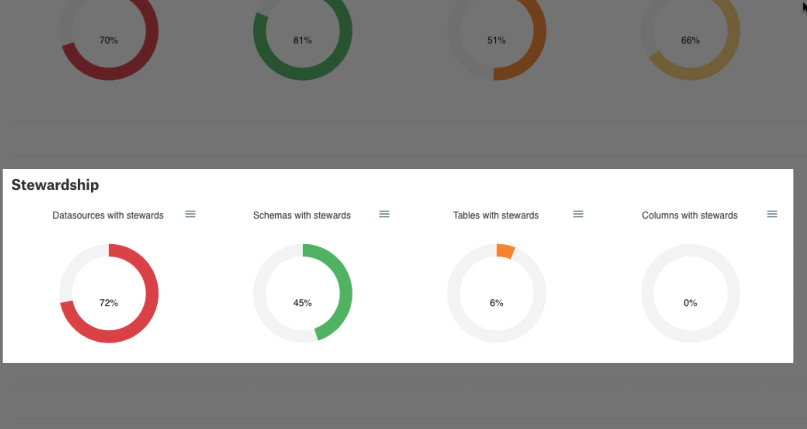

Using the Governance Dashboard¶
Alation Cloud Service Applies to Alation Cloud Service instances of Alation
Customer Managed Applies to customer-managed instances of Alation
Applies from version 2021.4
Alation’s Governance Dashboard is part of the Data Governance App. Catalog growth and the overall curation effort can be tracked through the Governance Dashboard visible to all Catalog viewers. Curation data is pulled from the Alation Analytics database to provide insights into curation progress, Catalog growth, and Steward assignments.
The Governance Dashboard is accessible by selecting the GOVERNANCE DASHBOARD tile on the Data Governance page.
How to Use Governance Dashboard¶
To learn about how to enable or disable the Governance Dashboard in your Data Catalog, see Configuring the Governance Dashboard.
Currently the Governance Dashboard has fixed views (no filters are available to change the views). All views are derived from information stored in the Alation Analytics database and updated once per day.
At the top of the dashboard is the Catalog Objects view which gives a count of RDBMS data objects, Stewards, and Articles. The RDBMS data object counts are for currently active objects (deleted objects accessible with Alation Analytics queries are not included in the count). The Stewards count includes a count of all users and groups that have been added as Stewards. The Articles count is only for active articles.
In the next section is the Total Curation Progress view, which is an overall average percentage calculation of curation for Datasources, Schemas, Tables, and Columns in the Catalog. A specific object is considered fully curated when its title, description, and all custom fields have been filled with a value.
Note
This is different from the total curation report available in the Stewardship dashboard which uses a weighted calculation. As a result, the curation totals in the two reports will not be the same.
Curation Progress by Data Object shows the curation progress for each individual RDBMS data object. Percentage values displayed are rounded down to the next whole number for each data object. As an example, in the following image 30% of Datasources have at least one empty field (either title, description, or custom field).
In the Stewardship section, displayed is the percentage of each data object type that has had Stewards assigned. Percentage values displayed are rounded down to the next whole number for each data object.

In the Growth section, displayed is the growth of different object types in the Catalog over time. On the x-axis is the date (month and year), with the y-axis displaying the number of objects. Dashed lines represent trend lines for the object types over time.
Hovering over a date of interest displays a point in time snapshot of the total number of objects active in the Catalog.
Actions with Governance Dashboard Reports¶
The donut chart for each data object can be downloaded as SVG, PNG, or CSV files by selecting the menu icon and desired format as shown below.